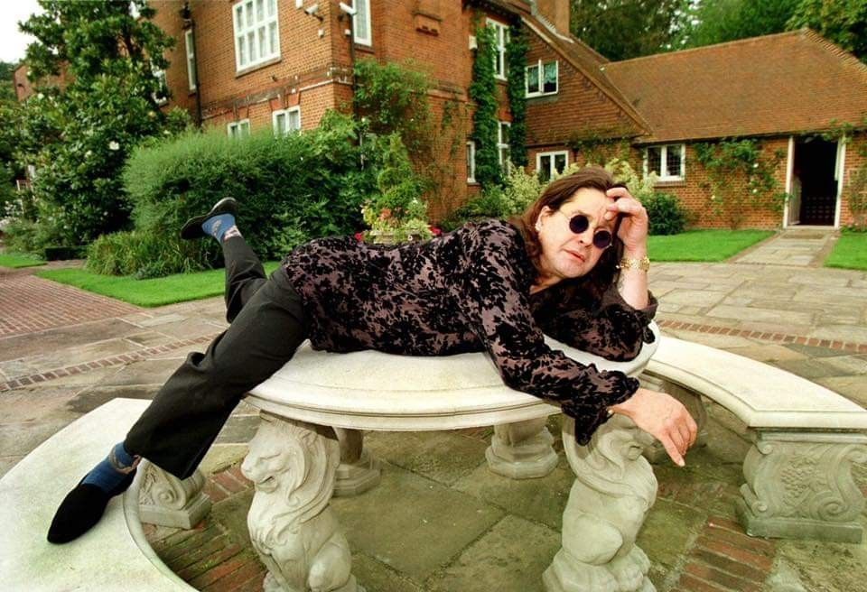

Dernières actualités et hommages
Ultime concert et sortie en vidéo : Quelques semaines avant sa disparition, Ozzy a donné un concert d'adieu historique intitulé « Back To The Beginning » à Birmingham le 5 juillet 2025. Une édition de cet ultime spectacle est prévue en Blu-ray et vinyle. Musique inédite : Des chansons inédites issues de sessions d'enregistrement ont été évoquées par son entourage et son collaborateur de longue date Andrew Watt. Hommages internationaux : Birmingham, sa ville natale, lui a rendu un vibrant hommage lors d'une procession publique pour son corbillard, et sa famille continue de perpétuer son héritage artistique.